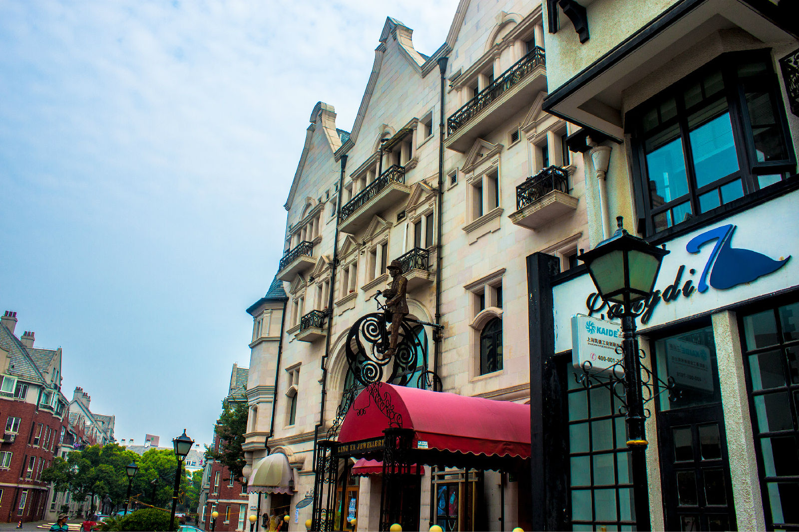

位于松江，距上海市区约70公里，融会英伦和东方建筑理念为一体，区域内有湖泊、山丘和城堡，可乘小火车游览。 小镇布局以教堂为中心，四周由别墅群围绕而成，英式建筑由房地产开发商联合打造，形成了大规模的异国风情建筑，高档别墅里散发着英伦气息，不少人来此拍摄婚纱照。 泰晤士小镇由连续的多功能步行街以及湖畔英式广场为主轴线集合商业配套、会所医院、超市教堂各类公建设施组成。
其设计充分发挥松江良好的生态环境基础，引入英国泰晤士河边小镇风情和住宅特征，追求人与自然的和谐，体现松江新城浓烈的现代化、国际性、生态型以及旅游文化气息。 英伦的各时期建筑、街区徐徐展现，仿佛迂回到中世纪的街巷，狭窄曲折的台阶，石板路，街头的雕塑，叠彩的墙面，维多利亚式的露台，哥特式建筑风格的教堂。在这里，仿佛时光倒流，莎翁剧中的场景重现。